friscy
fast risc-v runtime for the browser & wasm
net: off
Alpine
Node.js
Go Server
Import
friscy
Preparing...
Import a Docker image
Pull any public image from Docker Hub and run it in friscy
ubuntu:latest
Pull & Run
↻